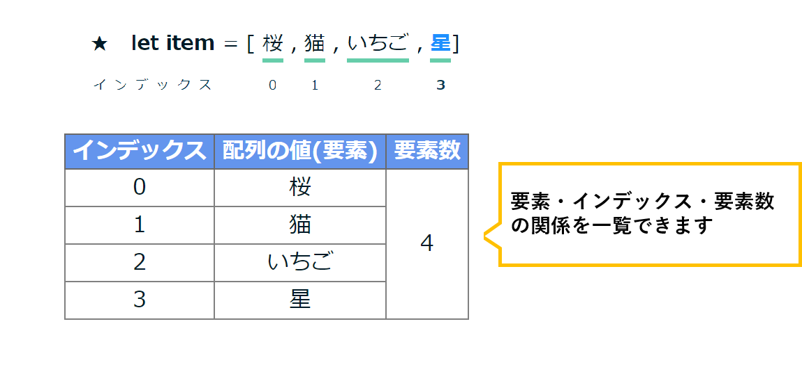

PUSHは配列の末尾に要素を追加、UNSHIFTは配列の先頭に要素を追加、
POPは配列の末尾の要素を削除、SHIFTは配列の先頭の要素を削除するメソッドです
それぞれのボタンを押してメソッドの意味を理解してみましょう
詳しい使い方
要素の追加方法
PUSHを押すと配列の末尾に要素が追加されます
UNSHIFTを押すと配列の先頭に要素が追加されます
要素の削除方法
POPを押すと配列の末尾の要素を削除します
SHIFTを押すと配列の先頭の要素を削除します
{{hairetsu_name}}[]
は{{atai}}です
{{hairetsu_name}}.lengthは {{yoo}} です
詳しい使い方
PUSH・POPについては、ボタン1の画面の説明を見て下さい
| インデックス | 配列の値(要素) | 要素数 |
|---|---|---|
| {{index}} | {{yousomei.name}} | {{inputs.length}} |
詳しい使い方
PUSH・POPについては、ボタン1の画面の説明を見て下さい
詳しい使い方
PUSH・POPについては、ボタン1の画面の説明を見て下さい